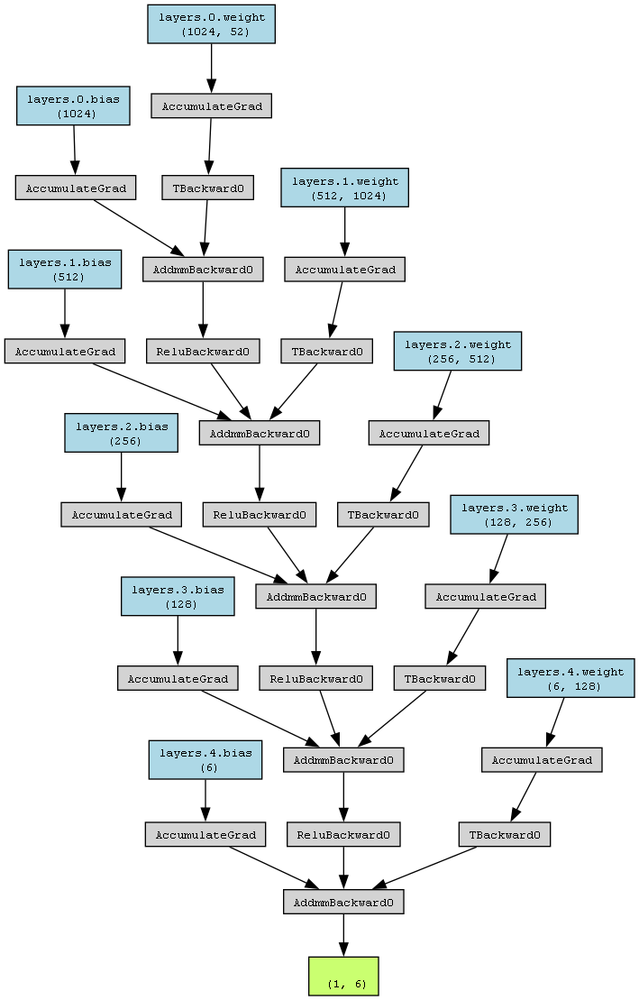
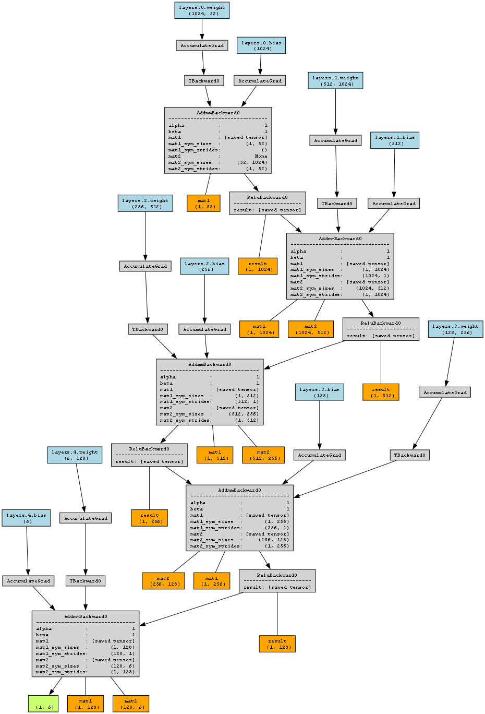

Project Overview
This project aims to gain experience in tuning a neural network for multiclass classification, specifically for predicting drought levels using meteorological data.
Project Structure
- droughtPrediction_EDA.ipynb: Basic Exploratory Data Analysis (EDA)
- droughtPrediction_DataEng.ipynb: Data preprocessing and feature engineering
- droughtPrediction_PyTorch_HP.ipynb: Hyperparameter tuning using PyTorch
- droughtPrediction_PyTorch_Final.ipynb: Final model evaluation and prediction pipeline
Model Architecture
DroughtClassifier(
(layers): ModuleList(
(0): Linear(in_features=52, out_features=1024, bias=True)
(1): Linear(in_features=1024, out_features=512, bias=True)
(2): Linear(in_features=512, out_features=256, bias=True)
(3): Linear(in_features=256, out_features=128, bias=True)
(4): Linear(in_features=128, out_features=6, bias=True)
)
(dropout): Dropout(p=0.2, inplace=False)
)
Final Hyperparameters
- Scheduler: StepLR (step_size: 10, gamma: 0.5)
- Dropout Probability: 0.2
- Hidden Layer Sizes: (1024, 512, 256, 128)
- Learning Rate: 0.001
Model Performance
- Loss: 0.6352
- Accuracy: 0.7337
- Macro F1 Mean: 0.6895
- MAE Mean: 0.3255
Dataset
The data used for this project comes from Kaggle: US Drought Meteorological Data. The US drought monitor measures drought across the US, created manually by experts using a wide range of data.
Data Splits
| Split | Year Range (inclusive) | Percentage (approximate) |
|---|---|---|
| Train | 2000-2009 | 47% |
| Validation | 2010-2011 | 10% |
| Test | 2012-2020 | 43% |
Model Visualized


Model Explained
- Input Layer: The input tensor has a shape of
(1, 52), indicating a batch size of 1 and 52 input features. - First Linear Layer (layers.0):
- weights:layers.0.weight (1024, 52)
- bias:layers.0.bias (1024)
This layer maps the 52 input features to 1024 features using a linear transformation. - First Activation and Dropout: The output from the first linear layer passes through a ReLU activation function, followed by a dropout layer to introduce regularization. Represented by
ReLUBackward0andTBackward0. - Second Linear Layer (layers.1):
- weights:layers.1.weight (512, 1024)
- bias:layers.1.bias (512)
This layer takes the 1024 features from the previous layer and maps them to 512 features. - Second Activation and Dropout: Similar to the first layer, the output from the second linear layer passes through ReLU activation and dropout. Represented by
ReLUBackward0andTBackward0. - Third Linear Layer (layers.2):
- weights:layers.2.weight (256, 512)
- bias:layers.2.bias (256)
This layer reduces the 512 features to 256 features. - Third Activation and Dropout: Again, the output goes through ReLU activation and dropout. Represented by
ReLUBackward0andTBackward0. - Fourth Linear Layer (layers.3):
- weights:layers.3.weight (128, 256)
- bias:layers.3.bias (128)
This layer further reduces the features from 256 to 128. - Fourth Activation and Dropout: The output undergoes ReLU activation and dropout. Represented by
ReLUBackward0andTBackward0. - Fifth (Output) Linear Layer (layers.4):
- weights:layers.4.weight (6, 128)
- bias:layers.4.bias (6)
This final layer maps the 128 features to 6 output classes. - Output: The final output tensor has a shape of
(1, 6), representing the model's prediction probabilities for each of the 6 classes. - AccumulateGrad Nodes: These nodes (e.g.,
AccumulateGrad) represent the gradients that are accumulated during the backward pass for each parameter in the model. These gradients are used by the optimizer to update the model's parameters during training.